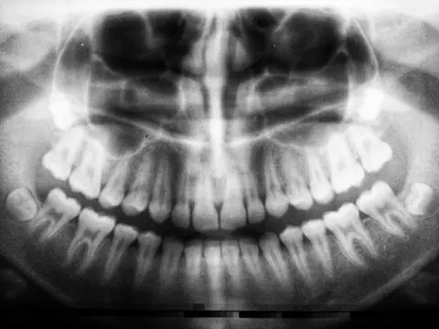

Prof. Dr. Fuat Ahmetoğlu
Tıbbi Hizmetler Direktörü · Endodonti Uzmanı
Serdivan Merkez Şubesi · Özgeçmişi Gör →Doğru tedavi, eksiksiz ve kanıta dayalı teşhisle başlar. Serdivan Merkez ve Adapazarı şubelerimizde ilk muayene (oral diagnoz); Dentsply Sirona düşük dozlu 3B konik ışınlı volümetrik tomografi (CBCT), dijital panoramik röntgen ve 8 uzmanlık branşımızın ortak konsey değerlendirmesiyle yürütülür.
İmplant, gömülü 20 yaş dişi, çene kisti ve kök ucu lezyonlarında kesitsel görüntüleme.
Gereksiz radyasyon maruziyetini önleyen modern dijital sensör teknolojisi.
Tıbbi Hizmetler Direktörümüz Prof. Dr. Fuat Ahmetoğlu koordinasyonunda tanı.
Tek branş yerine tüm uzmanların ortak akılla oluşturduğu şeffaf yol haritası.

Tıbbi Hizmetler Direktörü · Endodonti Uzmanı
Serdivan Merkez Şubesi · Özgeçmişi Gör →
Ağız, Diş ve Çene Cerrahisi Uzmanı
Serdivan Merkez Şubesi · Özgeçmişi Gör →
Protetik Diş Tedavisi Uzmanı
Serdivan Merkez Şubesi · Özgeçmişi Gör →
Kurucu Ortak · Estetik ve Dijital Diş Hekimliği
Serdivan Merkez Şubesi · Özgeçmişi Gör →Sakarya Serdivan Merkez Şubemizde (İstiklal Mah. 2. Cad. No: 13, Serdivan/Sakarya) Dentsply Sirona 3 boyutlu konik ışınlı volümetrik dental tomografi (CBCT) ve dijital panoramik görüntüleme, Adapazarı Şubemizde (Yenidoğan Mah. Fabrika Cad. No: 33, Adapazarı/Sakarya) ise dijital panoramik ve periapikal radyografi altyapımızla; Tıbbi Hizmetler Direktörümüz Prof. Dr. Fuat Ahmetoğlu ve uzman hekim kadromuz tarafından kapsamlı ilk muayene (oral diagnoz) ve multidisipliner tedavi planlaması yürütülmektedir.
Oral diagnoz; ağız, diş, diş eti, çene kemikleri, çene eklemi (TME) ve yumuşak dokuların klinik ve radyolojik yöntemlerle bütüncül olarak değerlendirildiği ilk tanı aşamasıdır. Yalnızca ağrıyan dişe odaklanmak yerine, sistemik sağlık geçmişiniz (diyabet, hipertansiyon, ilaç kullanımı vb.) ve tüm çene sisteminiz incelenerek uzun ömürlü bir tedavi planı oluşturulur.
Standart iki boyutlu röntgenlerde üst üste binen anatomik yapılar; Konik Işınlı Bilgisayarlı Tomografi (CBCT) ile milimetrenin altında kesitlerle üç boyutlu (genişlik, yükseklik ve derinlik) olarak görüntülenir. Dental implant planlamasında kemik kalınlığının ve mandibuler sinir kanalının mesafesinin ölçülmesi, maksiller sinüs anatomisinin incelenmesi, sinire komşu gömülü 20 yaş dişlerinin konumu, çene kistleri ve kök ucu lezyonlarının sınırlarının belirlenmesinde altın standart tanı aracıdır.
Serdivan ve Adapazarı şubelerimizin her ikisinde de bulunan düşük dozlu dijital panoramik röntgen cihazları ile tüm diş dizisi, süt ve daimi diş germsleri, çene eklemleri ve kök çevresi dokular saniyeler içinde dijital ekrana aktarılır; hekimlerimizin klinik muayene bulgularıyla birleştirilerek şeffaf biçimde hastamızla paylaşılır.
Birden fazla uzmanlık dalını ilgilendiren kapsamlı vakalarda (örneğin hem diş eti tedavisi, hem kanal tedavisi, hem implant cerrahisi hem de protetik gülüş tasarımı gerektiren durumlarda) radyolojik veriler üzerinden Ağız, Diş ve Çene Cerrahisi, Endodonti, Protetik Diş Tedavisi, Periodontoloji, Ortodonti ve Pedodonti uzmanlarımızın ortak görüşüyle aşama aşama tedavi takvimi belirlenir.
Accurate dental treatment begins with comprehensive oral diagnosis and high-precision radiological imaging. At our Serdivan Main Branch, Dentsply Sirona 3D Cone Beam Computed Tomography (CBCT) and digital panoramic radiography enable three-dimensional evaluation of bone volume, nerve canals, sinus anatomy, and periapical lesions prior to surgical, endodontic, and prosthodontic procedures.